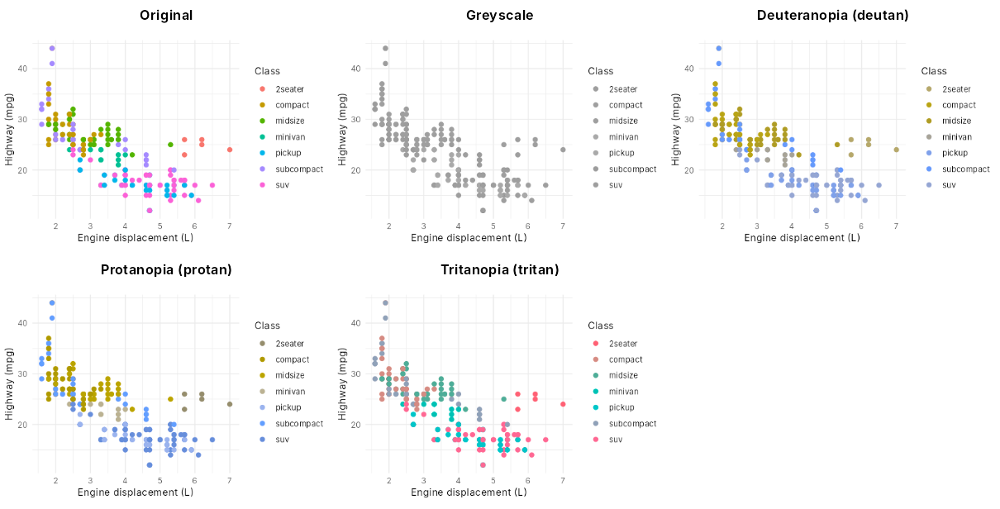

ggsaveR provides a drop-in replacement for ggplot2::ggsave() whose extra behaviour is set once, with global options, instead of in every call. Add two lines to the top of an existing analysis script and every ggsave() call in it will:
- save each figure in several formats and sizes, with consistent file names;
- write all figures to one folder, and never overwrite an existing file;
- produce greyscale and colour vision deficiency versions, so you can check that the colour palette works for every reader;
- embed the code, data and R session in PNG files, so a figure can be traced back to what produced it;
- record every saved file, with its size and checksum, in a CSV log.
With no options set, ggsaveR::ggsave() behaves exactly like ggplot2::ggsave().
Installation
Install the development version from GitHub:
# install.packages("pak")
pak::pak("andjar/ggsaveR")The colour vision deficiency simulations use the colorspace package, and SVG output needs svglite, as it does in ggplot2.
Usage
An existing script needs no changes beyond loading ggsaveR and setting the options:
library(ggplot2)
library(ggsaveR) # load order does not matter
ggsaveR_options(
formats = list(
list(device = "png", width = 180, height = 120, units = "mm", dpi = 300),
list(device = "pdf", width = 180, height = 120, units = "mm")
),
dir = "figures",
overwrite_action = "unique",
variants = "greyscale"
)
p <- ggplot(mtcars, aes(mpg, wt, colour = factor(cyl))) + geom_point()
ggsave("fuel-economy.png", p)
#> figures/fuel-economy.png
#> figures/fuel-economy.pdf
#> figures/fuel-economy_greyscale.pngggsaveR_options() checks the values straight away and returns the previous settings, so options(old) restores them. Plain options(ggsaveR.formats = ...) works too.
Features
Several formats and sizes
formats is either a character vector of devices, such as c("png", "pdf"), or a list of formats, each a list with a device and any other ggsave() arguments. Settings in a format take precedence over arguments in the call; arguments in the call fill in whatever a format leaves out.
When two formats would write to the same file, for example a PNG for slides and a PNG for print, the size is added to the file names:
ggsaveR_options(formats = list(
list(device = "png", width = 120, height = 80, units = "mm", dpi = 300),
list(device = "png", width = 254, height = 143, units = "mm", dpi = 150)
))
ggsave("trend.png", p)
#> trend_120x80mm_300dpi.png
#> trend_254x143mm_150dpi.pngSet size_suffix = TRUE to add the size to every file name, or give a format its own suffix, such as "_slide".
Output folder and overwrite protection
dir places every file with a relative name in one folder and creates it when needed. overwrite_action controls what happens when a file exists: "overwrite" (the default, as in ggplot2), "unique" (save as trend-1.png, trend-2.png, …) or "stop" (raise an error before any file is written).
Colour checks
Around 8% of men and 0.5% of women of Northern European ancestry have a colour vision deficiency, and many figures are printed or photocopied in greyscale. preview_variants() shows a plot as these readers see it:
p <- ggplot(mpg, aes(displ, hwy, colour = class)) + geom_point()
preview_variants(p)
The default ggplot2 palette has nearly equal lightness, so in greyscale the seven groups cannot be told apart. To save these versions next to every figure, set variants = c("greyscale", "deutan", "protan", "tritan").
Reproducibility
With embed_data = TRUE, PNG files carry the expression that produced the plot, the data behind it, the R session and the plot object. The image itself is unchanged.
ggsaveR_options(embed_data = TRUE)
ggsave("trend.png", p)
info <- read_ggsaveR_data("trend.png")
info$plot_call # "p"
head(info$plot_data) # the data, as a data frame
cat(info$session_info)
# The plot object is a serialized R object: only restore it from files you trust
p2 <- read_ggsaveR_data("trend.png", trusted = TRUE)$plot_objectThe call, data and session are stored as text and CSV, so they are safe to read and can be extracted outside R. Embedded data include every column of the data frame, so do not share such files if the data are sensitive. Use embed_metadata to embed less, or guard = TRUE to skip a single plot.
log = "figures/log.csv" appends one row per saved file with the time, path, size, resolution, MD5 checksum and the plot expression.
Escape hatch
ggsave(..., guard = TRUE) bypasses every option for one call and hands it unchanged to ggplot2::ggsave().
Options
| Option | Default | Description |
|---|---|---|
formats |
NULL |
Devices, or a list of formats with their own size and resolution. |
size_suffix |
"auto" |
Add the size to file names: "auto" (only on clashes), TRUE or FALSE. |
dir |
NULL |
Folder for all files with a relative name. |
overwrite_action |
"overwrite" |
"overwrite", "unique" or "stop". |
variants |
NULL |
Any of "greyscale", "deutan", "protan", "tritan". |
embed_data |
FALSE |
Embed reproducibility information in PNG files. |
embed_metadata |
all | Any of "plot", "data", "session_info", "call". |
embed_max_size |
5 MB | Largest embedded plot object and data. |
creator |
NULL |
Stored as the Author of PNG files. |
log |
NULL |
Path of a CSV file that records every saved file. |
Each option can also be set with options(), prefixed with ggsaveR., for example options(ggsaveR.dir = "figures"). Metadata is only written to PNG files; other formats are saved exactly as ggplot2::ggsave() saves them.
Differences from ggplot2
With no options set, ggsaveR::ggsave() differs from ggplot2::ggsave() in three small ways:
-
devicecan be a character vector, such asc("png", "pdf"), to save several files in one call; - if
filenamehas no extension anddeviceis a single string, the device is appended as the extension; - the invisible return value is a character vector of every file written.
Getting help and contributing
Please report bugs and suggest features in the issue tracker. Contributions are welcome; see the contributing guide.